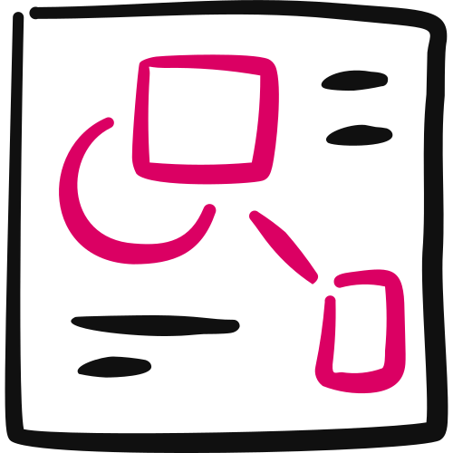

Client Flywheel™ · Step 7 · Your Program Modules · Part 2 of 2
Program Module Visuals
Your nine confirmed Module Specs become nine finished pages in your own brand. One page at a time, ready to edit by hand and print as PDFs.

You'll leave with nine finished module pages in your Brand Kit, one per spec, on a design canvas you can edit by hand (or as HTML files that print to PDF), plus a list of any missing content still on a page.
- The skill builds, it doesn't write. Every word comes from your spec. A wording change goes back into the spec first. 01
- Every page has the same eight zones. From the banner at the top to the legal line at the foot. 04
- Your spec picks the layout. Nine layouts, three structures, so no two pages in a row look alike. 05
- It's your Brand Kit. Your colours, your fonts, your photo, set once and switchable in one click. 06
- Build it one page at a time. Install the skill once, upload three things, then say "next." 10
01
From Spec to Finished Page
The Program Module Visual turns each confirmed Module Spec into a finished, printable page in your own brand.
In Your Program Modules, you wrote nine specs with the Specs Builder. Each one holds what's on the page and the lesson that goes with it.
This skill is step 2 of 2. It takes those specs, your BRAND KIT block and a headshot, and builds one page per module.
The page lands on a design canvas you can edit by hand. If your Claude account doesn't have the canvas, you get the same pages as HTML files that open in any browser and print to PDF.
What it doesn't do
It doesn't write or rewrite your content. A row name, a struggle or the promise is the spec's job.
Want to change a word? It goes back into the spec first, then onto the page. The skill offers to make that edit for you, so the two never drift apart.
And it never designs a page from a description. No spec, no page.
The spec is the truth. The page is the spec, made to look like you.
02
Where It Fits
The Program Module Visual is the last tool of Step 7, Goliath Content™, in the Client Flywheel™.
Figure 02 · The $100K Day Engine™. Three pillars, nine steps. Your module pages are built inside Step 7.
What you bring
| Input | Status | What it gives the build |
|---|---|---|
| Your Module Specs | Required | Everything on the page: Part A, plus the struggles, Done when and proof from Part B |
| Your BRAND KIT blockThe last block of your Visual Style Guide: "BRAND KIT:" with your Kit's name, and an "OVERRIDES:" line if you changed your hero colour or fonts. | Required for the final look | Your Kit and any hero-colour or font overrides |
| Your headshot | Required | The round photo in every module's banner |
| Your country | One question, once | The print size. It's never shown on the page. |
No spec? The skill stops and sends you back to the Specs Builder. No BRAND KIT block? It builds in a neutral Kit, tells you which, and flags it.
No headshot? A [PHOTO] circle sits in the banner until you supply one. Confirm all nine specs in Your Program Modules before you start here.
03
Three Stages, One Page at a Time
The skill works in three stages. You check the plan, then you see each page before the next one is built.
One short message: the modules it has, each one's layout and structure, your Kit, your photo, the print size and where the pages will go. Reply "go."
It builds a page, shows it and says what it cut to fit. You edit by hand or ask for changes. "Next," or "all."
One line per module, every placeholder still on a page, anything cut, and how to export each page as a PDF.
Your hand edits are safe. Before every change, the skill reads the page back and keeps what you changed.
04
Every Page Has Eight Zones
Whatever the layout, every module page has the same eight zones, in this order. Each one is filled from a set part of your spec.
The page tells a story: where you're stuck, the work, the result, done when and proof, where this fits, then the closing bar.
| Zone | From the spec | On the page |
|---|---|---|
| 1 · Banner | A1 + A7 | "Module 0N of 9" and the phase, the step's icon, the step name as the title, your chosen promise as the subtitle, your lockup and your headshot |
| 2 · Where you're stuck | B1 | Three numbered cards, each a short title and one or two sentences |
| 3 · The work | A3 | The working panel: label, teaching line, the rows to fill, and a ruled notes area |
| 4 · The result | A4 | A dark Result block with the hero visual and the stickyA small note with the one answer the page converges to, and two lines to fill in. The only warm tint on the page. |
| 5 · Done when + proof | B4 + B5 | Three or four tick items beside a testimonial card with five gold stars |
| 6 · Where this fits | A5 | Your system name, the nine step chips in three phase colours, and one "You are here" line naming the next module |
| 7 · The closing bar | A6 | Your belief line, "My commitment" with lines to sign, and one Next button |
| 8 · Legal line | — | © your business, plus "Results not typical" only when a real member result is printed |
Figure 04 · The eight zones. The same order on every page, so members always know where to look.
Module 9 is the one exception in zone 6. Its line names your members' ongoing rhythm instead of a next module.
If your spec says [MISSING CONTENT — a member result for this step], that's exactly what the testimonial card shows.
The skill never fills the gap with a quote you don't have. Supply it later and the flag comes off.
05
Nine Layouts, Three Structures
You don't pick these here. The layout comes from your spec's Layout line, and the structure comes from the module number.
The layout: what the work panel looks like
Each layout has its own template inside the skill. The template gives the structure only, never its example copy.
| Layout | The member… | The work panel | The hero visual |
|---|---|---|---|
| Worksheet | builds it | Fields, plus a table or formula and a fill-in sentence | The finished card, tilted |
| Matrix | places it | A lettered list beside a ruled 2 × 2 with a meaning per quadrant | A mini quadrant with a dot |
| Calculator | counts it | An input table with a worked example and a calculated column | Gap bars and the gap |
| Checklist | ticks it | Named rows with tick boxes, in two sections | A progress bar and the count |
| Script | says it | Five beats, left to right, each with "My version" | A speech bubble with the one line |
| Workflow | sequences it | A Start-here row above three stage cards with arrows | A timeline with a flag |
| Cheat Sheet | references it | A 3 × 3 grid of entries: name, when, the line to use | "This week I'll use 1 · 2 · 3" |
| Scorecard | scores it | Named rows with 1–5 circles, in two sections | A gauge and the total |
| Audit | scores and prices it | A setup strip, then rows with a score, a number and a cost | The big dollar field and the multiplier line |
Some layouts have limits: nine entries on a Cheat Sheet, five beats on a Script, eight items on a Matrix. An Audit always uses the Sidebar structure.
The structure: where the zones sit
Struggles in a row under the banner. The work panel on the left, the Result down the right.
A dark left column with the struggles and the Result. The work panel gets the most height.
A light left column with struggles, Done when and proof. The Result runs as a band under the work.
The rotation is why no two pages in a row look alike. The skill only changes a structure if it has a reason, and says so.
06
Built in Your Brand Kit
Every page reads your look from the BRAND KIT block you chose in your Visual Style Guide. You're never asked for a colour or a font.
There are six Kits: Crimson · Ink · Ember · Sovereign · Voltage · Meadow. The skill sets yours, and the whole page can switch to another Kit in one click.
If you have overrides
An OVERRIDES line can change your hero colour, the text on it, or your two fonts. The skill places your hero colour where it stays readable.
It fills the number tiles, the "you are here" chip and the Next button. It only becomes text, or sits on the dark band, where it's easy to read.
Mid-brightness heroes, like gold, green or cyan, always carry dark text. Never white.
Phase colours
Each of your three phases gets its own colour on the step chips. They come from your Kit and your Visual Style Guide, and each is checked so it reads clearly on paper.
The skill builds in a neutral Kit: Ink for serious or high-ticket programs, Meadow for wellness or calm, Crimson otherwise. It tells you which and flags it.
Better to finish your Visual Style Guide first, so the pages are yours from the start.
07
Making It Fit One Page
Every module is one landscape page. The skill applies the same design layer every time, then fits your words to the space.
The design layerOn every page
Your Kit's display font on every headline. An icon on every panel and every named row, drawn as simple line glyphs, never emoji or clip art.
One hero visual in the Result, redrawn for this module. The sticky with the one answer. Five gold stars on the testimonial.
The work panel always fills its zone. A ruled notes area takes up any spare height and disappears when there's none.
Word budgetsCut to fit, never shrink
Each slot has a character budget. Copy is tightened to the budget, never changed in meaning, name, number or claim.
| Slot | Budget |
|---|---|
| Title (the step name) | 28 characters, never shortened. A longer name drops in size instead. |
| Subtitle (the promise) | 95 |
| Struggle title · body | 34 · 120 |
| Panel label · teaching line | 32 · 110 |
| Done-when item | 48, three or four items |
| Quote · belief line | 90 · 40 |
The trap: shrinking the type to squeeze more in. Body text never goes under 15px and labels never under 13px.
When it doesn't fitThe order the skill follows
- Shorten copy to the budgets.
- Drop a blank writing row. At least two stay, plus the example.
- Fold a second panel into the Result.
Anything cut is named in the reply. Nothing from your spec is cut without telling you.
08
Before and After
Here's the made-up module from Your Program Modules: Step 2 of a "Calm CEO Method," called "The Sunday Reset."
A1: "The Sunday Reset," with the chosen promise. Layout: Workflow. A3: Start here, then Clear, Choose, Block. A4: "My Week, Set."
B5: [MISSING CONTENT — a member result for this step].
- Structure: B · Sidebar, because it's Module 2
- Banner: "Module 02 of 9," the step name in full, the promise below it
- The work: a Start-here row above three stage cards with arrows
- The result: a timeline with a flag, and the sticky
- Proof: the card still reads [MISSING CONTENT — a member result for this step]
One plain Next button, naming Module 03 in the "You are here" line.
Figure 08 · Same spec, now a page. An illustrative example: a made-up coach and system, with no real client implied.
Notice what the skill didn't do: shorten the step name, add a price, or invent a member quote.
09
The Hard Rules
The skill holds every page to these.
- The spec's words. Tightened only to the budgets. Never a changed name, number, price or claim.
- The module's name is the step's name. Exactly as the spec writes it. A long title drops in size, never in words.
- No offer on the page. Belief line, commitment lines and one Next button. No price, booking, QR code or second button.
- No paper size on anything a member sees. Page titles read "Module 0N · [Step name]."
- Never invent. No proof, numbers, quotes, links or program features that aren't in the spec.
- Your Kit, your photo, your names. Nothing from the made-up businesses in the templates.
- One program per canvas. Only your specs and your Kit.
- Headlines in your Kit's display font. Never a marker, script or novelty face.
10
Build Your Pages
Now you build them. Have your nine confirmed specs, your BRAND KIT block and a headshot ready before you start.
The Program Module Visual skill
It reads your confirmed specs, your BRAND KIT block and a headshot, then builds each module page in your brand, one at a time. You install it in Claude once.
Upload the .zip as it is. Don't unzip it: the page templates and Brand Kits inside are what the build uses.
- Download the skill. Use the button above to save
cl-program-module-visual.zip. - Install it once. In Claude, open Settings › Capabilities › Skills (or Customize › Skills in the app), choose Upload skill and upload the .zip. Check: it shows as enabled.
- Open a new chat and upload three things. Your Module Specs (all nine, or just the ones you want built), your BRAND KIT block with any OVERRIDES line, and a square-ish headshot.
- Say "Build my module pages." It confirms what it has, its Kit and print size, and asks your country if it needs to. Check: every module shows its layout and structure. Reply "go."
- Check Module 1. It builds the page and says what it cut to fit. Check: the step name and promise match your spec.
- Go one module at a time. Edit by hand or ask for changes, then say "next," or "all" for the rest. A wording change goes back into the spec first.
- Save them. Export each page as a PDF and save it beside its spec in Client Engine › Client Flywheel › program-modules.
Want a different look? Say "show it in Ink" (or Crimson, Ember, Sovereign, Voltage, Meadow).
11
Check Your Work
Most problems with module pages come from one of these. Check each page against them.
Every content change now has to be made twice.
Then the pages build straight from them.
The page and the spec quietly drift apart.
Let the skill make the spec edit for you.
"Sunday Reset" on the page when the step is "The Sunday Reset."
A long title drops in size before anything else.
A made-up quote where a member result should be.
Supply it later and the flag comes off.
The pages land in a neutral Kit that isn't yours.
From the end of your Visual Style Guide, with any OVERRIDES line.
Is it ready?
- Every page is titled with the step's exact name, in full.
- Every page has all eight zones, from the banner to the legal line.
- The pages are in your Kit, with your headshot, not a [PHOTO] circle.
- Nothing is for sale on any page: one Next button, no price, booking or QR code.
- Every [MISSING CONTENT — …] still on a page is on your list to fill.
- Anything cut to fit is something you've read and are happy with.
- Each page is exported as a PDF and saved beside its spec.
12
Your Action Items
Tick these off as you go. Your ticks stay in this browser, and when they're all done the contents marks this chapter complete.
Resources for this chapter
Next, in Dragon Fire Ads™, you turn what you've built into paid ads that fill your events.
Write it, confirm it, then make it look like you. The words live in the spec. The page just carries them, in your brand, one module at a time.
Coach Launch
Apply For Partnership Opportunity
Last updated 2026-11-12